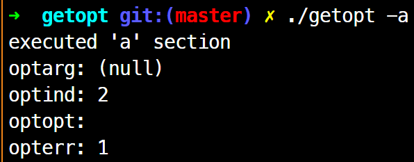
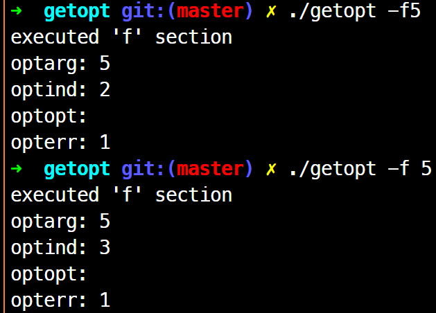
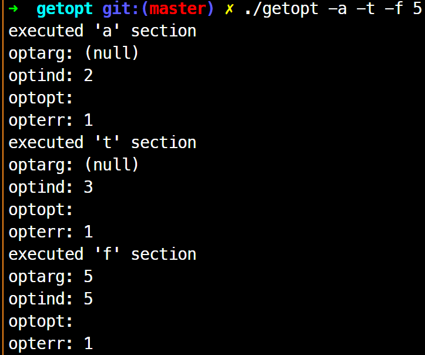

option parsing: getopt(), getopt_long()
옵션을 정의할 때의 관습
- 짧은 옵션(short option)
- 파라미터 X: ls -a -l -s
- 묶을 수 있다: ls -als
- 파라미터 O: head -n 5
- 옵션과 파라미터를 붙이거나 뗄 수 있다: head -n 5, head -n5
- 파라미터 X: ls -a -l -s
- 긴 옵션(long option)
- 파라미터 X: --version
- 파라미터 O: tail --lines 5, tail --lines=5
- ”=”를 붙이거나 뗄 수 있다: tail --lines 5, tail --lines=5
- ”=”를 붙이거나 뗄 수 있다: tail --lines 5, tail --lines=5
- ls -a -s -k와 같은 옵션
- ls -a -s -k
- ls -ask
- ls --all --size --kibibytes
- head -n 5와 같은 옵션
- head -n 5
- head -n5
- head --line 5
- head --line=5
getopt():3
#include <unistd.h>
int getopt(int argc, char * const argv[], const char *optdecl);
extern char *optarg;
extern int optind, opterr, optopt;
기능: 짧은 옵션만 인식하는 UNIX API
getopt() 예제
#include <unistd.h>
extern char *optarg;
extern int optind, opterr, optopt;
int main(int argc, char *argv[]){
int opt;
while ((opt=getopt(argc, argv, "af:tx"))!=-1){
switch (opt){
case 'a':
/* code which process option '-a' */
break;
case '?':
/* when wrong option is passed */
break;
}
}
}
- getopt()는 항상 루프 사용
- getopt()는 호출될 때마다 인자로 넘겨진 다음 옵션 문자를 반환
- 잘못된 옵션의 경우 ? 반환
- 모든 옵션 반환 시, -1 반환
- 따라서 while문으로 -1 조건
- 세 번째 인자에 파라미터 및 옵션을 지정한다.
- 파라미터 X 옵션: -a, -t, -x => “atx” (순서 상관 X)
- 파라미터 O 옵션: 옵션뒤에 콜론(:) -f 5 => “f:”
- “af:tx” (순서 상관 X)
- 전역 변수 ‘char *optarg’를 통해 파라미터 값 얻음
- getopt() 관련 전역 변수
| 형태 | 명칭 | 의미 |
|---|---|---|
| char* | optarg | 현재 처리 중인 옵션의 파라미터 |
| int | optind | 현재 처리 중인 옵션 index(argc + 1 값임을 주의!) |
| int | optopt | 현재 처리 중인 옵션 문자 |
| int | opterr | 이 값이 ‘참’이면 getopt()가 에러 메시지를 표시 |

파라미터가 없는 옵션의 경우 optarg는 NULL

파라미터가 있는 경우 optarg는 parameter가 잘 먹힘

주의!
--를 만나면 -1을 반환하여 while文 탈출
- 옵션은 다음 옵션으로 넘어간다.
getopt_long():3
'--'의 긴 옵션을 위한 함수 getopt_long()
주의! getopt_long()은 리눅스가 아닌 OS에서는 사용할 수 없다고 보면 된다.
#include <stdio.h>
#define _GNU_SOURCE
#include <getopt.h>
int getopt_long(int argc, char * const argv[],
const char *optdecl, const struct option *longoptdecl,
int *longindex);
struct option{
const char *name;
int has_arg;
int *flags;
int val;
};
extern char *optarg;
extern int optind, opterr, optopt;
- 3번째 인자까지는 getopt()와 같음
- 네 번째 인자 struct option 구조체 배열을 사용해 롱 옵션 지정
이 배열 마지막에는 모든 멤버 0
| 멤버 이름 | 형태 | 값과 의미 |
|---|---|---|
| name | char* | 롱 옵션의 이름. lines, help 등 |
| has_arg | int | no_argument(또는 0): 파라미터 취하지 않음 required_argument(또는 1): 반드시 파라미터를 취함 optional_argument(또는 2): 파라미터를 취할 수도 있음 |
| flags | int* | NULL: getopt_long()은 val의 값을 반환 NULL 이외: getopt_long()은 0을 반환하고 *flags에 val의 값을 대입 |
| val | int | flag의 값에 따라 지정한 곳에 반환할 값 |
이중 flags와 val은 함께 사용해야 하는데, 아래를 참고하자
| 의도 | name값 | has_arg값 | flags 값 | val 값 |
|---|---|---|---|---|
| --help 옵션을 발견했을 때 getopt_long()가 ‘h’를 반환하게 하고 싶다. 즉, 긴 옵션 --help를 -h에 대응 시키려함 |
"--help" | no_argument | NULL | ‘h’ |
| --lines는 -n에 대응 시킴 | "--lines" | required_argument | NULL | ‘n’ |
| --all 옵션이 나타나면, 변수 opt_all의 값이 1이된다. | "--all" | no_argument | &opt_all | 1 |
getopt_long()의 다섯 번째 인자가 NULL이 아닌 경우에는 발견한 롱 옵션의 인덱스를 적재한다.
이 인덱스를 통해 현재 처리 중인 옵션에 해당하는 struct option을 얻는다.
getop_long() 예제
#include <stdio.h>
#include <stdlib.h>
#define _GNU_SOURCE
#include <getopt.h>
static void do_head(FILE *f, long nlines);
#define DEFAULT_N_LINES 10
static struct option longopts[]={
{"lines", required_argument, NULL, 'n'},
{"help",no_argument,NULL,'h'},
{0,0,0,0}
};
int main(int argc,char *argv[]){
int opt;
long nlines=DEFAULT_N_LINES;
while((opt=getopt_long(argc,argv,"n:",longopts,NULL))!=-1){
switch (opt) {
case 'n':
nlines=atol(optarg);
break;
case 'h':
fprintf(stdout, "Usage: %s [-n LINES] [FILE ...]\n",argv[0]);
exit(0);
case '?':
fprintf(stderr, "Usage: %s [-n LINES] [FILE ...]\n",argv[0]);
exit(1);
}
}
if(optind==argc){
do_head(stdin,nlines);
} else {
int i;
for(i=optind;i<argc;i++){
FILE *f;
f=fopen(argv[i],"r");
if(!f){
perror(argv[i]);
exit(1);
}
do_head(f, nlines);
fclose(f);
}
}
exit(0);
}